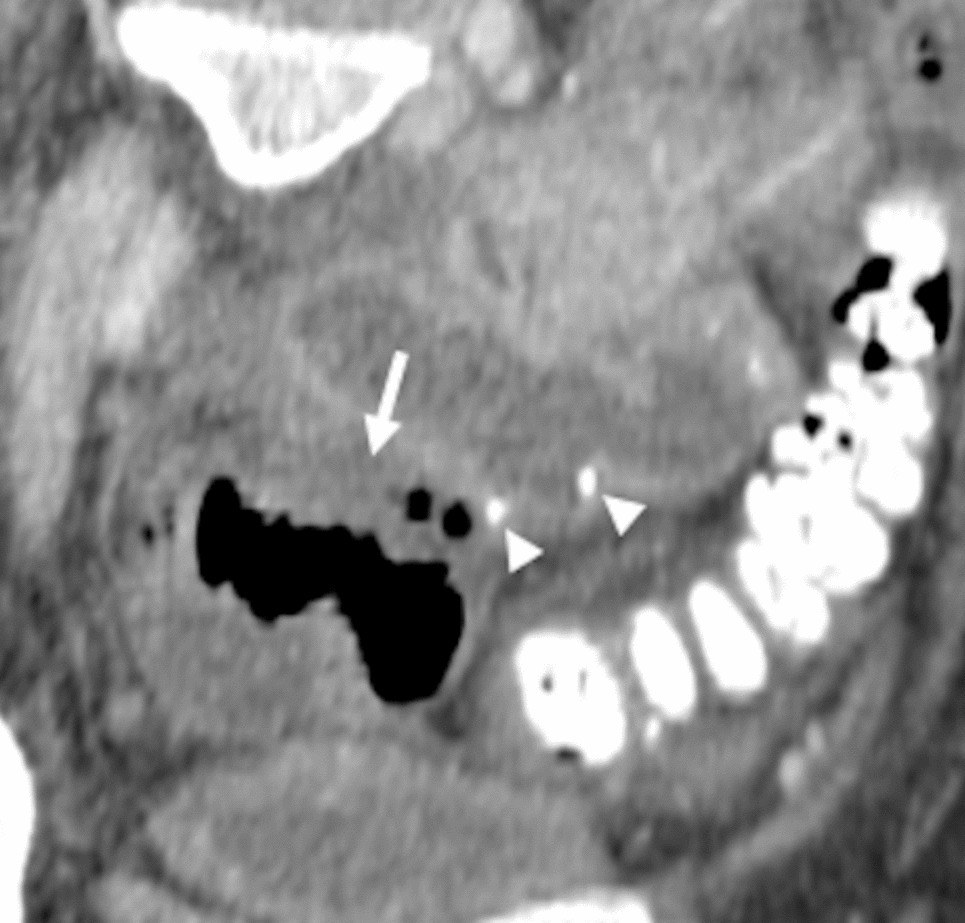
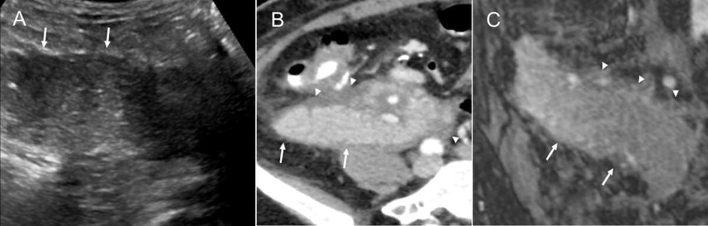
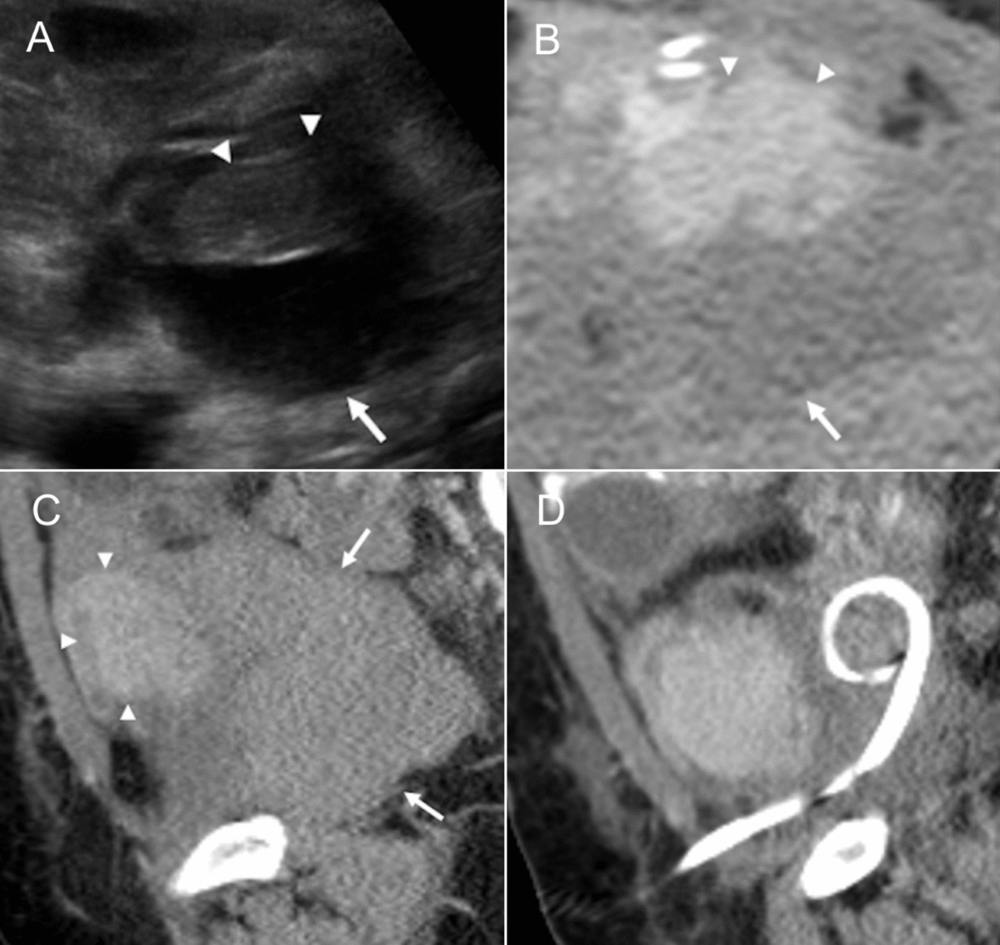

1853 — Rò – hoại tử tá tràng mảnh ghép sau ghép tụy: mủ có khí cạnh miệng nối, và cửa sổ để cứu mảnh ghép / Graft duodenal leak after pancreas transplantation
Tags: pattern:ro-miem-noi pattern:o-dich-co-khi pattern:hoai-tu pattern:nhim-trung-o-bung vung:bung vung:manh-ghep-tuy vung:ta-trang protocol:CT-bung protocol:Doppler-manh-ghep protocol:choc-hut-dan-luu score:ISGPS score:Clavien-Dindo incidentaloma:khong
Mức chắc chắn (certainty): tổng hợp y văn (literature synthesis) — ghép 284 ca ghép tụy có phân tích yếu tố nguy cơ rò tá tràng (Transpl Int 2015, PMID 25647150), 223 ca đồng thời thận–tụy (SPK) có ổ dịch quanh tụy (Transplantation 2013, PMID 23507700), 241 ca so sánh hai kiểu dẫn lưu ngoại tiết (Transpl Int 2014, PMID 24750305), 198 ca cắt mảnh ghép sớm có đọc lại mô bệnh (Clin Transplant 2019, PMID 31452273), 118 ca mở bụng lại (Transplant Proc 2009, PMID 19715955), 78 ca SPK định nghĩa rò tụy theo ISGPS (PMID 36220755), tổng quan hình ảnh–can thiệp 2025 (Abdom Radiol, PMC12602581, CC BY 4.0) và khuyến cáo nhiễm khuẩn ổ bụng của AST (PMID 31102546). Nhóm không có bệnh nhân của mình.
Câu chốt: tá tràng ghép không có nguồn máu riêng — nó sống bằng cung mạch tá tụy trên/dưới của chính mảnh ghép, mà mỏm tá tràng và bờ đối mạc treo là vùng tận cùng của cung đó. Vì vậy rò tá tràng sau ghép tụy không phải "hở chỉ khâu" đơn thuần: đó là thiếu máu/hoại tử đầu tụy–tá tràng (hoặc thải ghép cấp không nhận ra, gặp ở 9/15 ca rò được đọc lại mô bệnh — PMID 31452273). Trên CT, dấu hiệu mạnh nhất không phải ổ dịch, mà là KHÍ nằm trong ổ dịch sát miệng nối; và không có khí không loại trừ.
1. Tổng quan bệnh học – cơ chế hình ảnh (TẠI SAO)
1.1 Vì sao mỏm tá tràng ghép là điểm yếu nhất
- Trong ghép tụy, tá tràng của người cho được giữ lại thành một "cổ tá tràng" (duodenal cuff) để dẫn lưu ngoại tiết (vào ruột non qua tá tràng–hỗng tràng hoặc vào tá tràng–tá tràng, hoặc vào bàng quang). Mỏm này nuôi bằng cung tá tụy trên (từ động mạch dạ dày–tá tràng, nhánh của SMA mảnh ghép) và cung tá tụy dưới — không có nhánh trực tiếp từ thành bụng hay mạc treo chủ.
- Vùng tận cùng của cung là bờ đối mạc treo và mỏm tá tràng — nơi áp lực tưới máu thấp nhất. Đây là lý do rò thường ở đúng đường khâu mỏm, không ở giữa thân mảnh ghép.
- Ba cơ chế cộng dồn làm mỏm hoại tử: (1) tổn thương bảo quản–tái tưới máu (thể hiện bằng amylase đỉnh sau mổ — yếu tố nguy cơ rò trong nhóm SPK, PMID 25647150); (2) xơ vữa/giảm tưới máu người nhận (can thiệp tim mạch trước ghép cũng là yếu tố nguy cơ, PMID 25647150); (3) thải ghép cấp — 9/15 ca cắt mảnh ghép sớm vì "rò/thu thập dịch tái phát" có thải ghép cấp chưa được nhận ra trên mô bệnh (PMID 31452273).
- TẠI SAO thải ghép lại gây rò: thải ghép tấn công vi mạch và niêm mạc tá tràng ghép → thiếu máu niêm mạc → loét → thủng đường khâu, trong khi siêu âm và CT chỉ thấy "dịch quanh mảnh ghép". Vì vậy một ổ dịch "không giải thích được" ở bệnh nhân ghép tụy phải nghĩ đến thải ghép, không chỉ "biến chứng kỹ thuật".
1.2 Vì sao mủ + dịch tụy lại nguy hiểm gấp bội
- Dịch rò là hỗn hợp dịch tụy (enzyme tiêu protein/ mỡ) + vi khuẩn đường ruột. Enzym hoạt hóa tự tiêu mô mỡ và thành mạch → viêm tụy quanh mảnh ghép, áp-xe đa ổ, giả phình động mạch (mycotic), xuất huyết tiêu hóa.
- Vi khuẩn đa loài khiến áp-xe quanh mảnh ghép khó diệt bằng kháng sinh đơn thuần: khuyến cáo AST nhấn mạnh kiểm soát nguồn (source control) là nền tảng, vì rò tá tràng ghép "có thể dẫn tới mất mảnh ghép và tử vong" (PMID 31102546).
- Hệ quả lên mảnh ghép: viêm/áp-xe quanh tụy → huyết khối tĩnh mạch và động mạch mảnh ghép → mất mảnh ghép. Chuỗi này giải thích vì sao mở bụng lại sau ghép tụy có tỉ lệ cắt mảnh ghép rất cao (52,5% trong loạt 118 ca, PMID 19715955).
1.3 Vật lý hình ảnh: đọc CT thế nào cho đúng
- Ổ dịch sau ghép tụy là "dịch hỗn hợp": báng thanh dịch, lymphocele, seroma, máu, mủ — tất cả 0–30 HU, chồng lấp hoàn toàn. Đậm độ không phân biệt được; thứ phân biệt là khí, viền ngấm, đậm độ mỡ quanh, và bối cảnh ngày hậu phẫu.
- Khí trong ổ dịch (≈ −1000 HU) = dấu hiệu mạnh của rò/thủng/nhiễm kỵ khí. Nhưng: khí tự do trong ổ bụng là bình thường vài ngày đầu sau mổ bụng; khí khu trú trong một ổ dịch cạnh miệng nối, xuất hiện muộn hơn, hoặc tăng lên thì mới là bất thường.
- Cản quang đường uống (nước uống hoặc cản quang tan trong nước): thoát cản quang ra ngoài lòng ruột tại miệng nối là chẩn đoán xác định — nhưng chỉ dương tính khi rò còn hoạt động và cản quang tới được chỗ rò; âm tính không loại trừ.
- CT có cản quang tĩnh mạch còn trả lời câu hỏi quan trọng hơn: mảnh ghép còn ngấm thuốc đồng nhất không? mất ngấm khu trú ở đầu tụy = thiếu máu vùng dSMA (nối 1840), mất ngấm toàn bộ = huyết khối mạch → cắt mảnh ghép, không phải dẫn lưu.
- Giả phình/hoại tử thành mạch: ổ dịch + máu trong ổ dịch (HU cao không đồng nhất) + "sentinel bleed" → CTA trước khi chọc, vì chọc vào giả phình nhiễm có thể gây chảy máu tử vong.
1.4 Số liệu định lượng nằm lòng
| Đại lượng | Số liệu | Nguồn |
|---|---|---|
| Tỉ lệ rò tá tràng ghép (DL) | 18/284 = 6,3%; 12/18 = 67% trong 100 ngày đầu | PMID 25647150 |
| Yếu tố nguy cơ | PAK (ghép tụy sau thận): OR 3,526 (p = 0,008); ức chế miễn dịch trước ghép: OR 3,328 (p = 0,012); trong SPK: amylase đỉnh sau mổ và can thiệp tim mạch trước ghép | PMID 25647150 |
| Cứu được mảnh ghép | 6/18 = 33% nhờ cắt đoạn tá tràng | PMID 25647150 |
| Rò theo kiểu dẫn lưu | tá tràng–tá tràng 2/125 = 1,6% vs tá tràng–hỗng tràng 8/116 = 7% (p = 0,052); xuất huyết tiêu hóa 11% vs 3% (p = 0,026) | PMID 24750305 |
| Ổ dịch quanh tụy có ý nghĩa lâm sàng (PPFC) | 36/223 = 16%, 100% trong 3 tháng đầu; dẫn lưu qua da chỉ giải quyết 2/36 = 6%, 34 ca phải mở bụng | PMID 23507700 |
| PPFC gắn với gì | viêm tụy ghép sớm 50%, rò tụy 56% (9 ca rò mỏm tá tràng rõ), nhiễm khuẩn ổ dịch 56% | PMID 23507700 |
| Sống còn mảnh ghép khi có PPFC | 68% vs 85% lúc 5 năm; nhiễm khuẩn 75% vs 46% | PMID 23507700 |
| Mở bụng lại | 40/118 = 33,9%; do rò mỏm tá tràng 7/118 = 5,9%; cắt mảnh ghép 52,5% các ca mở lại; tử vong sau mở lại 3,38% | PMID 19715955 |
| Cắt mảnh ghép sớm | 23/198 = 11,6%; 9/15 ca rò/thu thập dịch tái phát có thải ghép cấp trên mô bệnh | PMID 31452273 |
| Rò muộn (sau 3 tháng) | trung bình 20,5 tháng (3,5–74); 92% ở mảnh ghép dẫn lưu bàng quang; trước đó: thải ghép 16%, chấn thương bụng kín 12%, CMV 8% | PMID 15740558 |
| Rò tụy sinh hóa theo ISGPS (SPK) | 56,6% (44/78) nhưng "gánh nặng lâm sàng thấp"; biến chứng nặng 39,7%; tử vong 90 ngày 2,6% | PMID 36220755 |
Đọc số cho đúng: 56,6% rò tụy sinh hóa (amylase dịch dẫn lưu cao) không đồng nghĩa 56,6% bệnh nhân có rò tá tràng cần mổ — đa số chỉ cần dẫn lưu kín + dinh dưỡng. Ngược lại, rò thật có ổ dịch nhiễm rất nặng: chỉ 6% đáp ứng dẫn lưu qua da trong loạt 223 ca (PMID 23507700). Hai con số này không mâu thuẫn: chúng đo hai mức độ khác nhau của cùng phổ.
2. Mẫu hình + chẩn đoán phân biệt theo vị trí (Gamut)
- Mẫu hình kinh điển: ổ dịch giữa mảnh ghép tụy và miệng nối tá tràng–ruột, bờ dày ngấm thuốc, khí trong ổ, đậm độ mỡ quanh tăng, có/không mức dịch–khí; mảnh ghép còn ngấm thuốc; bụng chướng, sốt, đau hố chậu phải, tăng amylase dịch dẫn lưu.
- Theo vị trí ổ dịch (gamut):
- Sát miệng nối tá tràng–ruột (hố chậu phải): rò tá tràng (chính), áp-xe không rò, viêm tụy ghép, huyết khối mảnh ghép.
- Quanh đuôi tụy/dưới thận ghép: PPFC/seroma/lymphocele, áp-xe, giả phình động mạch.
- Rãnh gan–thận, quanh lách: rò miệng nối tĩnh mạch cửa, huyết khối, áp-xe dưới hoành.
- Tiền phúc mạc/đường mổ: nhiễm vết mổ, hoại tử cân, rò tiêu hóa ra da.
- Theo thời điểm: sớm < 100 ngày (67% ca rò; chủ yếu thiếu máu/kỹ thuật/thải ghép) vs muộn (trung bình 20,5 tháng; thường dẫn lưu bàng quang, sau thải ghép/CMV/chấn thương — PMID 15740558).
- Ba câu hỏi trước khi gọi "rò": (1) Mảnh ghép còn ngấm thuốc đều không? (2) Khí nằm trong ổ dịch hay khí tự do lan tỏa? (3) Có giả phình/máu trong ổ dịch không?
3. Bảng so sánh phân biệt (ma trận đối chiếu)
| Thực thể (entity) | Hình ảnh điển hình (CT có cản quang / Doppler) | Chốt vào (rule-in) | Chốt loại (rule-out) | Gợi ý xác nhận |
|---|---|---|---|---|
| Rò tá tràng ghép | Ổ dịch sát miệng nối + khí trong ổ, viền ngấm, đậm độ mỡ quanh tăng; thoát cản quang đường uống | Khí khu trú trong ổ dịch cạnh miệng nối; thoát cản quang; amylase dịch dẫn lưu cao | Mảnh ghép mất ngấm toàn bộ → huyết khối (không phải rò đơn thuần) | CT + cản quang uống; cấy + amylase dịch dẫn lưu |
| Viêm tụy ghép cấp | Mảnh ghép to, phù, ngấm không đều, dịch quanh lan tỏa không khu trú, không khí | Dịch quanh lan tỏa + amylase máu cao + không có ổ khí khu trú | Khí trong ổ khu trú + viền dày → rò/áp-xe | Doppler (mạch còn), amylase/lipase, sinh thiết nếu nghi thải ghép |
| Áp-xe quanh mảnh ghép (không rò) | Ổ dịch bờ dày ngấm, có/không khí, không thấy đường thông | Ổ dịch nhiễm khuẩn khu trú, cấy mủ dương | Thấy khí + thoát cản quang → có rò | Chọc hút: cấy + amylase; dẫn lưu |
| PPFC (seroma/lymphocele) | Ổ dịch thành mỏng, đồng nhất, không khí, không viền dày, không sốt | Dịch trong, amylase thấp, không khí, không viền | Viền dày + khí + sốt → áp-xe/rò | Chọc hút chẩn đoán; theo dõi |
| Huyết khối mạch mảnh ghép (nối 1840) | Mất ngấm thuốc mảnh ghép/đoạn; Doppler mất phổ, RI > 0,8 hoặc đảo dòng | Mất ngấm + mất phổ + amylase tăng vọt | Mảnh ghép ngấm đều → không phải tắc | CTA; mổ/cắt sớm, không chờ |
| Giả phình nhiễm (mycotic) | Ổ ngấm thuốc song hành động mạch trong ổ dịch, máu trong ổ, có thể vỡ | Cấu trúc ngấm thuốc hình túi trong ổ dịch + xuất huyết | Ổ dịch không ngấm, không máu → không phải giả phình | CTA trước mọi chọc hút; nút mạch/stent |
| Thải ghép cấp (APR) | Mảnh ghép to, phù, dịch quanh, không đặc hiệu; có thể kèm ổ dịch tái phát | Dịch tái phát nhiều lần + amylase tăng + đáp ứng corticoid | Không có mô bệnh → không loại trừ được | Sinh thiết mảnh ghép (9/15 ca rò có APR — PMID 31452273) |
- Ảnh đối chiếu:
images/1853_ro-ta-trang_CT_PMC12602581-Fig14.jpg(ổ dịch có khí sát miệng nối tá tràng–ruột — dấu hiệu chốt) đặt cạnhimages/1853_vim-tuy-ghep_CT_PMC12602581-Fig16.png(viêm tụy ghép: dịch quanh lan tỏa, không khí, mảnh ghép to).
Dấu hiệu đọc theo thứ tự (4 bước trên một lát CT qua mảnh ghép)
- Mảnh ghép có ngấm thuốc đồng nhất không? (mất ngấm = mạch, ưu tiên mổ hơn dẫn lưu)
- Khí ở đâu? trong ổ dịch khu trú cạnh miệng nối → rò; lan tỏa tự do → có thể còn tồn dư hơi sau mổ.
- Có máu/giả phình trong ổ dịch không? (HU cao không đồng nhất, cấu trúc ngấm hình túi)
- Đo ổ dịch + ghi vị trí tương quan miệng nối — quyết định đường vào dẫn lưu an toàn (tránh mạch mảnh ghép và quai ruột).
4. Protocol chụp + hệ phân độ/điểm chuẩn hóa
4.1 Protocol
- Siêu âm Doppler mảnh ghép là bước 0 (đầu giường, không bức xạ): vị trí, kích thước, tưới máu, RI, dịch quanh; không phân biệt được mủ với dịch nhưng phát hiện mất phổ nhanh.
- CT bụng–chậu có cản quang tĩnh mạch là chuẩn: thì động mạch muộn/tĩnh mạch cửa 40–60 giây, lát 1–2 mm, MPR trục + tránh + đứng dọc, cửa sổ mô mềm và xương; cho uống nước hoặc cản quang tan trong nước 30–60 phút trước chụp khi nghi rò (giúp thấy thoát cản quang).
- CTA thì mạch khi có máu trong ổ dịch, "sentinel bleed", hoặc giảm Hb — trước khi đặt dẫn lưu.
- MRI/MRCP khi suy thận (không dùng được cản quang) hoặc cần đánh giá ống tụy/miệng nối; không thay CTA khi nghi mạch.
- Xét nghiệm dịch dẫn lưu là một phần của "protocol": amylase/lipase + cấy + đếm tế bào — amylase dịch cao hơn nhiều lần amylase máu gợi ý rò tụy/tá tràng; cấy dương xác định nhiễm ổ dịch.
- Không dùng X-quang bụng thường quy để loại trừ rò; không chọc hút ổ dịch quanh mảnh ghép mà chưa có CTA khi có dấu hiệu xuất huyết.
4.2 Phân độ + ngưỡng xử trí
flowchart TD
A["Sốt, đau hố chậu, amylase dịch dẫn lưu tăng sau ghép tụy"] --> B["Siêu âm Doppler + CT có cản quang"]
B --> C{"Mảnh ghép còn ngấm thuốc đều?"}
C -->|Không| D["Nghi huyết khối mạch - CTA, mổ/cắt mảnh ghép"]
C -->|Có| E{"Ổ dịch có khí hoặc thoát cản quang?"}
E -->|Có| F["Rò tá tràng ghép"]
E -->|Không| G{"Bờ dày ngấm + cấy mủ dương?"}
G -->|Có| H["Áp-xe không rò - dẫn lưu + kháng sinh"]
G -->|Không| I["PPFC/seroma - theo dõi hoặc chọc hút chẩn đoán"]
F --> J{"Toàn thân: sốc, nhiễm khuẩn huyết, ổ dịch lớn nhiều ngăn?"}
J -->|Có| K["Mổ: sửa lỗ rò + chuyển lưu ruột, hoặc cắt mảnh ghép"]
J -->|Không| L["Dẫn lưu qua da + kháng sinh + dinh dưỡng, theo dõi 24-48 giờ"]
L --> M{"Xấu đi hoặc ổ dịch không giảm sau 48-72 giờ?"}
M -->|Có| K
M -->|Không| N["Tiếp tục, chụp lại theo lâm sàng"]
- Phân loại thời điểm: rò sớm < 100 ngày (67%) vs muộn (trung bình 20,5 tháng, chủ yếu mảnh ghép dẫn lưu bàng quang — PMID 15740558) — khác cơ chế và cách xử trí.
- Rò tụy theo ISGPS (dùng cho cả ghép tụy): amylase dịch dẫn lưu > 3 × giới hạn trên amylase máu, từ ngày hậu phẫu 3; phân grade B/C theo ảnh hưởng lâm sàng (B: đổi xử trí/keo dẫn lưu kéo dài; C: can thiệp lại, suy tạng). Trong 78 ca SPK: rò sinh hóa 56,6%, nhưng biến chứng nặng 39,7%, tử vong 90 ngày 2,6% (PMID 36220755).
- Clavien–Dindo để mô tả biến chứng (IIIa = can thiệp không gây mê; IIIb = gây mê; IV = suy tạng) — dùng khi báo cáo, không thay quyết định lâm sàng.
| Tình huống | Ngưỡng / hành động | Nguồn số |
|---|---|---|
| Rò nhỏ, bệnh nhân ổn định, ổ dịch một ngăn | Dẫn lưu qua da + kháng sinh + dinh dưỡng, đánh giá lại 48–72 giờ | PMID 23507700, PMC12602581 |
| Ổ dịch nhiễm nhiều ngăn / sốc nhiễm khuẩn | Mở bụng: sửa lỗ rò + chuyển lưu ruột (Roux-en-Y), hoặc cắt đoạn tá tràng | PMID 25647150, PMID 31616610 |
| Mảnh ghép mất ngấm / hoại tử | Cắt mảnh ghép — không dẫn lưu đơn thuần | PMID 19715955 |
| Rò tái phát nhiều lần, không rõ nguyên nhân | Sinh thiết mảnh ghép tìm thải ghép cấp (9/15 ca) | PMID 31452273 |
| Có máu trong ổ dịch / sentinel bleed | CTA + nút mạch/stent trước khi chọc | PMC12602581 |
| Dẫn lưu qua da thất bại | 6% thành công trong loạt 223 ca → ngưỡng chuyển mổ thấp | PMID 23507700 |
5. Biến thể bình thường và cạm bẫy
- Khí sau mổ là bình thường trong vài ngày đầu: khí tự do sớm sau mở bụng không đồng nghĩa thủng; khí trong một ổ dịch khu trú cạnh miệng nối, xuất hiện muộn hoặc tăng lên mới đáng lo.
- "Không có khí" không loại trừ rò: nhiều ổ mủ không có khí; cần cản quang đường uống, amylase dịch dẫn lưu và diễn tiến lâm sàng.
- Amylase dịch dẫn lưu cao là chuyện thường: 56,6% ca SPK đạt tiêu chuẩn rò sinh hóa nhưng gánh nặng lâm sàng thấp (PMID 36220755) — không đẩy mọi bệnh nhân vào mổ.
- Dịch quanh mảnh ghép "vô khuẩn" vẫn có thể là rò: 9 ca rò mỏm tá tràng nằm trong nhóm PPFC với 56% nhiễm khuẩn ổ dịch (PMID 23507700) — cấy âm một lần không loại trừ.
- Bẫy "biến chứng kỹ thuật": gán mọi rò cho tay nghề phẫu thuật mà bỏ thải ghép cấp — 9/15 ca cắt mảnh ghép sớm có APR chưa nhận ra (PMID 31452273), và điều trị khác hẳn (tăng ức chế miễn dịch, không chỉ mổ).
- Rò muộn sau nhiều năm: trung bình 20,5 tháng, 92% ở mảnh ghép dẫn lưu bàng quang (PMID 15740558) — bệnh nhân ghép tụy đến muộn với đau bụng vẫn phải nghĩ rò tá tràng, không chỉ "viêm tụy".
- Chọc hút ổ dịch = hành vi có thể gây chết người nếu ổ dịch chứa giả phình nhiễm: luôn CTA khi có máu, đau nhói, Hb giảm.
- Nhầm mảnh ghép tụy với quai ruột/áp-xe đơn thuần: mảnh ghép nằm trong phúc mạc/hố chậu phải, hình dài, ngấm thuốc như tụy; nếu báo cáo "ổ dịch hố chậu" mà không nhắc mảnh ghép, phẫu thuật viên sẽ dẫn lưu sai.
- Không đọc đơn độc một thì: huyết khối tĩnh mạch có thể chỉ thấy ở thì muộn (ngấm thuế không đều) — luôn xem đủ thì + Doppler.
6. Tự lượng giá — Blind Quiz
Ca 1 — Nam 52 tuổi, ghép tụy sau ghép thận, ngày hậu phẫu 8: sốt, đau hố chậu phải, bạch cầu tăng.

- Gợi ý: dịch dẫn lưu ra đục, amylase dịch cao; không nôn, không tiêu chảy máu.
- Câu hỏi: (1) Dấu hiệu nào chốt rò tá tràng? (2) Vì sao không gọi đây là "áp-xe đơn thuần"? (3) Hai lựa chọn điều trị và tiêu chí chọn?
Bấm để hiện đáp án (findings + chẩn đoán)
- Dấu hiệu: ổ dịch khu trú, bờ không đều, có foci khí sát miệng nối tá tràng–ruột (mũi tên), đậm độ mỡ quanh tăng; mảnh ghép còn ngấm thuốc.
- Chẩn đoán: rò miệng nối tá tràng–ruột (duodenoenteric anastomotic leak) — ổ dịch nhiễm khuẩn thứ phát.
- Vì sao: khí trong ổ dịch sát miệng nối = mất tính toàn vẹn thành ruột; dịch tụy + vi khuẩn gây viêm mô mỡ quanh → áp-xe.
- Xử trí trong ca gốc: đặt dẫn lưu qua da + kháng sinh; theo dõi sát vì tỉ lệ thất bại dẫn lưu qua da 94% trong loạt lớn (PMID 23507700) → ngưỡng chuyển mổ thấp nếu không giảm sau 48–72 giờ.
- Nguồn ảnh: Abdom Radiol 2025, PMC12602581, Fig. 14 (CC BY 4.0); nguyên bản, không crop/ghép.
Ca 2 — Nữ 35 tuổi, ghép tụy đơn thuần, ngày 12: đường huyết tăng dai dẳng, đau bụng nhẹ, không sốt.

- Gợi ý: amylase máu tăng; dịch quanh không khu trú, không khí; mảnh ghép ngấm thuốc đều.
- Câu hỏi: (1) Chẩn đoán hình ảnh là gì? (2) Vì sao không mổ ngay? (3) Chẩn đoán nào không phân biệt được trên hình ảnh và cần gì để loại?
Bấm để hiện đáp án
- Dấu hiệu: (A) mảnh ghép to, echo không đồng nhất; (B) dịch đậm độ thấp quanh mảnh ghép, không khu trú, không khí; (C) MRI: mảnh ghép to + phù quanh.
- Chẩn đoán: viêm tụy mảnh ghép cấp — điều trị nội khoa (nhịn ăn/dinh dưỡng, theo dõi), không dẫn lưu vì không có ổ dịch khu trú nhiễm.
- Không phân biệt được với: thải ghép cấp — hình ảnh giống hệt; phân biệt bằng sinh thiết (và đáp ứng corticoid), không bằng CT (PMC12602581 caption: "Rejection can have similar findings and is differentiated with biopsy").
- Vì sao quan trọng: gọi nhầm viêm tụy/thải ghép thành "rò" → mổ/dẫn lưu oan; gọi nhầm thải ghép thành viêm tụy → mất mảnh ghép.
- Nguồn ảnh: Abdom Radiol 2025, PMC12602581, Fig. 16 (CC BY 4.0); nguyên bản, không crop/ghép.
Ca 3 — Nam 31 tuổi, ghép tụy sau ghép thận, ngày 14: chỉ hơi đau bụng, không sốt, siêu âm thấy dịch cạnh mảnh ghép.

- Gợi ý: bạch cầu bình thường, amylase dịch dẫn lưu thấp, cấy âm.
- Câu hỏi: (1) Đây là ổ dịch gì? (2) Dấu hiệu nào loại áp-xe/rò? (3) Xử trí: theo dõi hay dẫn lưu?
Bấm để hiện đáp án
- Dấu hiệu: (A) dịch trống âm đơn thuần; (B–C) ổ dịch đồng nhất, đậm độ thấp, không ngấm, không khí, thành mỏng, nằm cạnh mảnh ghép; (D trong bài gốc) giảm rõ sau đặt dẫn lưu.
- Chẩn đoán: ổ dịch quanh tụy đơn thuần (PPFC/seroma) — không nhiễm, không rò.
- Loại áp-xe/rò nhờ: không khí + thành mỏng không ngấm + cấy âm + amylase dịch thấp; nhưng nhớ 16% ca ghép SPK có PPFC "có ý nghĩa lâm sàng" và 56% trong số đó nhiễm khuẩn (PMID 23507700) → theo dõi, chọc hút khi có triệu chứng.
- Nguồn ảnh: Abdom Radiol 2025, PMC12602581, Fig. 13 (CC BY 4.0); nguyên bản, không crop/ghép.
Bài liên quan chéo
- 100 – Tổng quan hệ Bụng
- 1840 – Huyết khối mảnh ghép tụy: CPAT, dSMA và vùng tưới máu đầu tụy
- 1913 – Hẹp & huyết khối động mạch gan sau ghép gan
- 1861 – Hẹp động mạch gan sau ghép gan
- 163 – Huyết khối tĩnh mạch mạc treo (pylephlebitis)
- 118 – Độc thận do ức chế calcineurin
- 1839 – Tràn dưỡng chấp sau cắt gan
Ảnh
1853_ro-ta-trang_CT_PMC12602581-Fig14.jpg— CT có cản quang: ổ dịch có khí sát miệng nối tá tràng–ruột (Abdom Radiol 2025, PMC12602581, CC BY 4.0).1853_vim-tuy-ghep_CT_PMC12602581-Fig16.png— siêu âm + CT + MRI: viêm tụy mảnh ghép cấp, dịch quanh lan tỏa (Abdom Radiol 2025, PMC12602581, CC BY 4.0).1853_dich-quanh-tuy_CT_PMC12602581-Fig13.jpg— ổ dịch quanh tụy đơn thuần (PPFC/seroma) trước và sau dẫn lưu (Abdom Radiol 2025, PMC12602581, CC BY 4.0).- Nguồn + giấy phép từng ảnh:
images/CREDITS.md. Không tạo ảnh ghép: các hình gốc đã là panel nhiều ô với tỷ lệ rất khác nhau (965 × 923 vs 1200 × 385), ghép sẽ thu nhỏ mất chi tiết và cắt attribution.
Không dùng để chẩn đoán độc lập khi chưa có người hướng dẫn.